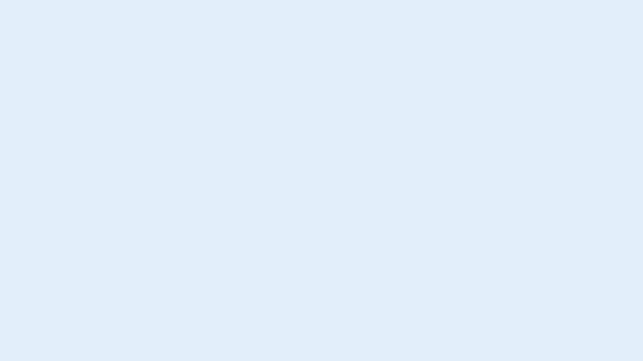
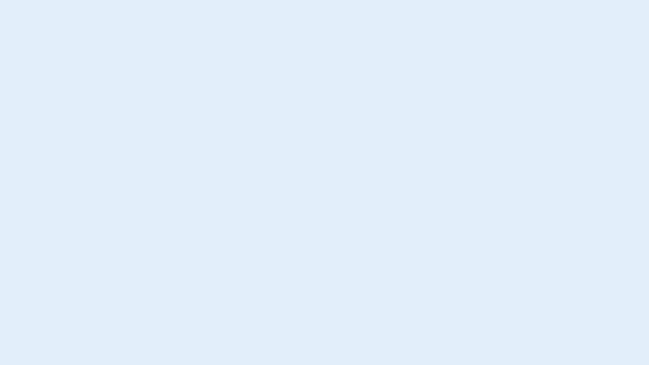
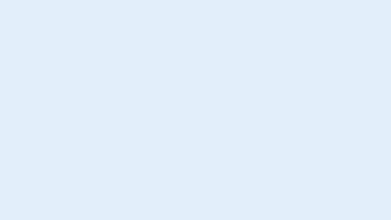

萤石 C5T 筒机忘记密码恢复教程（CS-C5T-1B2WFR）
本文以萤石 C5T 筒机（型号 CS-C5T-1B2WFR，海康威视同方案机型）为例，介绍忘记登录密码后的完整恢复流程：导出密文 → 邮箱获取导入文件 → 重置密码 → 用萤石客户端改 IP、恢复出厂 → 直接添加录像机。全程约 5~10 分钟，无需返厂。
步骤1：下载并运行《设备网络搜索》软件
《设备网络搜索》即海康威视 SADP 工具，用于发现局域网内的摄像机和录像机。在海康威视官网"服务支持 → 下载 → 工具软件"获取，或用随附的安装包。安装后打开，软件会自动扫描同网段设备（前提是摄像机已用网线接进同一路由器/交换机）。

📷 配图：设备网络搜索（SADP）主界面与设备列表
步骤2：勾选设备，导出密码重置密文
在设备列表中勾选需要重置密码的那台摄像机，点击右下角"忘记密码"。软件会根据设备类型自动生成一份加密的 XML 文件（里面是密钥密文，不含你的原密码），按提示保存到本地即可。

📷 配图：勾选设备 → 点击"忘记密码" → 导出 XML 密文
步骤3：将密文发送到客服邮箱，获取导入文件
把导出的 XML 文件发送到海康威视客服邮箱（或你拿货的代理商）。对方核对后会回复一封导入文件——该文件有时效、且绑定该设备序列号，请勿转发他人。
国内一般走代理商或"海康互联"在线渠道，比官方邮箱往返更快，几分钟即可收到回件。

📷 配图：导出的 XML 邮件发送 / 收到的导入文件
步骤4：导入文件，重置新密码
回到软件，选择"文件导入"，设置新密码与确认密码，单击图标选择导入文件所在路径，点"确定"。重置成功会提示"成功"。
新密码规则（务必遵守）：
- 长度 8–16 位；
- 由数字、小写字母、大写字母、特殊字符中至少两种组合而成；
- 不能包含 "admin" 字样；
- 建议采用高强度组合（四种都用），并每 3 个月更新一次，避免网络安全隐患。
若不成功：关闭电脑杀毒软件，重启设备与软件，重新导出密文并重复本步骤。

📷 配图：导入文件 → 设置新密码 → 点"确定"
步骤5：萤石客户端本地管理——改 IP 与恢复出厂
密码恢复后，打开萤石客户端，进入"本地设备管理"即可对该摄像机做两件事：
- 修改 IP：把摄像机改到你监控网段（如 192.168.0.x），方便录像机添加；
- 恢复出厂设置：清掉旧配置，回到初始状态，为重新接入做准备。
📷 配图：萤石客户端 → 本地设备管理 → 改 IP / 恢复出厂设置
步骤6：添加录像机（密码 = 摄像机验证码）
恢复出厂后，摄像机可以直接添加进录像机（NVR）。添加时填写的密码，就是摄像机机身上的"验证码"——即标签上二维码旁边那串字母数字，不是你刚设的登录密码。
用验证码添加成功即完成整套恢复，摄像机恢复在线、正常录像。

📷 配图：录像机添加摄像机 → 密码栏填机身"验证码"
温馨提示
- 两个密码别混：机身"验证码"通常在标签二维码旁，恢复出厂后添加设备才用得到；刚设的"登录密码"只用于网页端/客户端登录，二者不是一回事。
- 重置完建议把新登录密码记到加密记事本，避免再次遗忘。
- 导入文件有时效且绑定该设备序列号，不要转发给他人，防止被冒用。